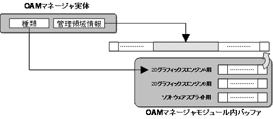

OAMマネージャ概要
概念図

説明
ＯＡＭマネージャは、2DグラフィックスエンジンのOAMをラップし、ユーザに利用しやすいインタフェースを提供します。
ＯＡＭマネージャを利用することで、OAMの使用位置や使用個数を制限してOAMを利用することが可能となります。
また、ＯＡＭマネージャは、登録されたOBJを、ソフトウェアスプライト描画で描画することができます。
描画方法については、OAMマネージャの作成時に指定します。
なお、OAMマネージャはソフトウェアスプライト描画機能を実現するにあたり、
OAMソフトウエアスプライト描画モジュールを下請けモジュールとして利用しています。
OAM管理機能
OAMマネージャは、2Dグラフィックスエンジンが持つ128個のOAMの中で、
OAMマネージャが管理する領域を指定する事が出来ます。
この機能により、OAMの中に、ユーザが独自で表示したいOBJと、
OAMマネージャを使って表示するOBJを混在させる事ができます。
拡張OAMマネージャ
拡張OAMマネージャでは、OAMにセットするOBJを順番に入れ替えることにより、仮想的にＯＡＭの上限である128個以上のOBJを表示させる事が可能です。
拡張OAMマネージャは、内部にNNSG2DOamProxy、NNSG2DAffineParamProxyという、OAMアトリビュート、Affineパラメータの代理役となるデータ構造のバッファを持ちます。
マネージャに登録されたOAMデータは一旦、代理役へと姿を変え、前述のバッファへと格納されます。
バッファ内容は最終的にハードウエアに適用され、描画処理が実現します。
バッファ内容を時分割でハードウエアにコピーすることによって、ちらついた状態で、見た目上は2Dグラフィックスエンジンの最大限界数以上の多数OBJの表示を実現しています。OBJ自身はちらつきますが、重要ではないゲームオブジェクトなどの表示に使用することができます。
なお、バッファ内容をハードウエアに適用する部分の処理を通常の関数ポインタによって外部モジュールに委譲しています。そのため、ユーザが独自に作成したOAMマネージャの上位モジュールとして機能することも可能となっています。
参照
なし
履歴
2004/12/06 初版